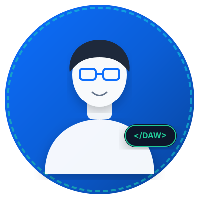
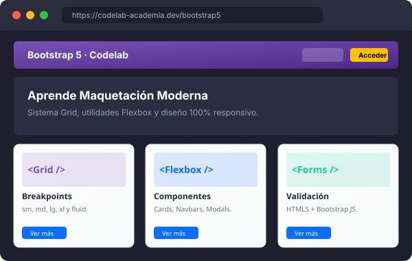
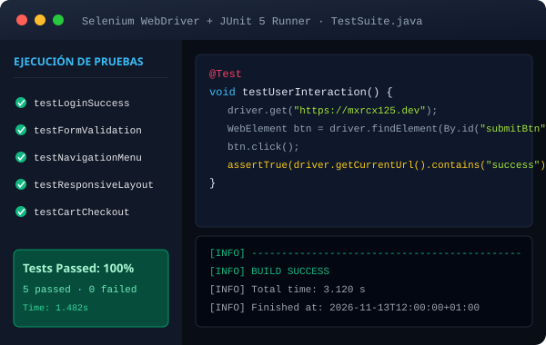

Marco García Ruiz
Desarrollador Web Junior · Estudiante de DAW
Apasionado por el desarrollo web moderno, la maquetación semántica y la creación de interfaces limpias, accesibles e intuitivas. Especializado en el ecosistema front-end con HTML5, CSS3, JavaScript y Bootstrap 5, complementado con bases sólidas en desarrollo back-end en Java y PHP. Con ilusión y compromiso de aportar valor técnico en mis próximas prácticas en empresa (FFEOE / FCT).
Habilidades y Tecnologías
Herramientas y competencias adquiridas durante mi formación técnica y proyectos personales.
Front-end
Maquetación semántica, diseño responsivo y lógica en el navegador:
Back-end
Programación orientada a objetos, lógica de servidor y servicios web:
Bases de datos
Modelado relacional, integridad referencial y consultas estructuradas:
Herramientas & Testing
Control de versiones, pruebas de software y entornos de trabajo:
Idiomas
Comunicación verbal y técnica en entornos de desarrollo:
- Español Nativo
- Inglés B1 · Técnico profesional
Competencias
Habilidades blandas orientadas al trabajo profesional y ágil:
Proyectos Destacados
Selección de proyectos de desarrollo web y control de calidad con código fuente en GitHub.

Codelab & Academia Web
Plataforma educativa con ejercicios progresivos de maquetación web moderna, sistema de rejilla Bootstrap 5.3, utilidades flexbox y componentes interactivos totalmente adaptables a móviles, tablets y escritorio.

Testing con Selenium & JUnit 5
Batería de pruebas automatizadas end-to-end implementada sobre arquitecturas web. Automatización de navegación, comprobación de validación de formularios, aserciones funcionales y generación de reportes de ejecución.
Formación y Experiencia
Mi trayectoria académica, certificaciones y preparación para el sector profesional.
Centro Educativo: Instituto Oficial de Formación Profesional MEDAC.
Módulos y competencias destacadas:
- Diseño de Interfaces Web: Usabilidad, maquetación CSS3 avanzada, Bootstrap 5.3, diseño adaptativo y accesibilidad web.
- Desarrollo Web en Entorno Cliente: JavaScript ES6+, manipulación del DOM, programación asíncrona y consumo de APIs.
- Desarrollo Web en Entorno Servidor: Programación backend con PHP y Java, patrones MVC y seguridad web.
- Bases de Datos & Sistemas Informáticos: Diseño relacional, SQL, MySQL, administración de servidores y despliegue de aplicaciones.
Fase formativa práctica orientada a la integración en empresas tecnológicas y departamentos de desarrollo de software.
- Disponibilidad para incorporarme en equipos multidisciplinares de desarrollo web (frontend o full-stack junior).
- Capacidad de resolución de incidencias, trabajo con metodologías ágiles (Scrum) y control de versiones con Git.
- Gran motivación por aprender nuevas tecnologías y buenas prácticas de ingeniería de software.
- Automatización de Pruebas Web con Selenium WebDriver & JUnit 5: Creación de suites de pruebas funcionales y testing unitario.
- Maquetación Responsiva con Bootstrap 5 & Flexbox: Creación de layouts complejos y sitios web adaptables.
- Control de Versiones y Flujo de Trabajo en GitHub: Ramas, pull requests, despliegue continuo con GitHub Pages y colaboración en equipo.
Formación con base en matemáticas, física y tecnología industrial, aportando pensamiento lógico, capacidad de abstracción y rigor analítico en la resolución de problemas técnicos.
Contacto
¿Quieres hablar sobre una oportunidad laboral, prácticas o colaborar en un proyecto? ¡Escríbeme!
Envíame un mensaje
Información de contacto
También puedes contactar conmigo directamente a través de cualquiera de estos canales o revisar mi código en GitHub:
Email profesional
marcogr1231@gmail.comGitHub
github.com/Mxrcx125Disponibilidad
Madrid, España · Abierto a modalidad presencial, híbrida o en remoto.
¿Prefieres revisar mi trayectoria en papel?
Descargar currículum en PDF